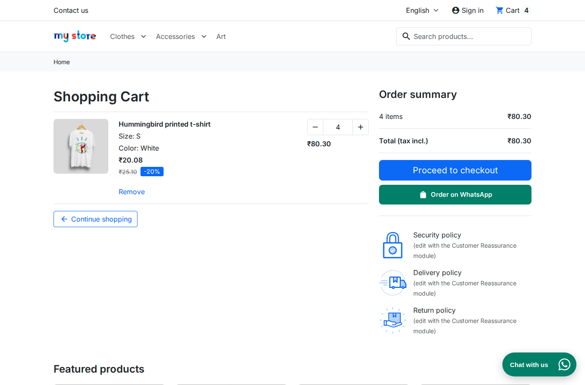

Cart order
Open the Cart order tab.
- Show an Order on WhatsApp button under Proceed to checkout: adds the button to the cart. The message lists every product, quantity and price, the total and the cart ID.
- WhatsApp number for orders: empty means the first agent.
- Button text: up to 60 characters.
- Message: up to 1000 characters.
You can use these variables in the message: {cart_lines} {cart_total} {cart_id} {cart_count} {shop_name}.
You can find the same cart in your back office under Customers > Shopping Carts.
